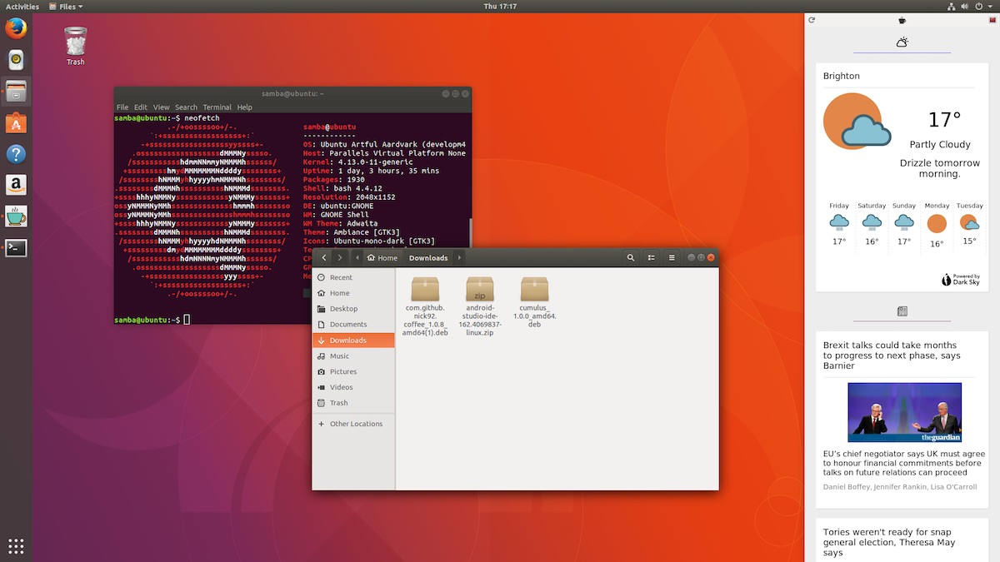
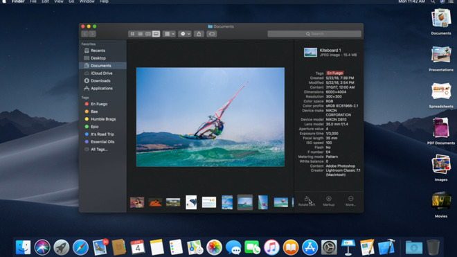
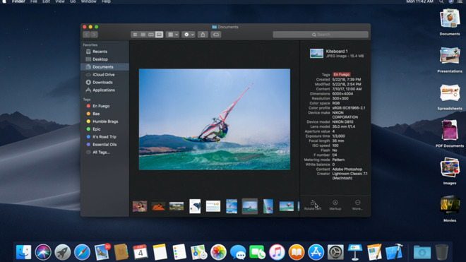

Wat is een OS?
Embedded & Operating Systems 0
Inhoud
- Terugblik blok 1
- Operating Systems
- Taken Operating System
- Hardware-aansturing
- Geheugenmodel van een taak
Waar waren we gebleven?
Instructies
| 1000 Ra Rb | ADD Ra Rb | Tel Ra bij Rb |
| 1001 Ra Rb | SHR Ra Rb | Shift Ra naar rechts |
| 1010 Ra Rb | SHL Ra Rb | Shift Ra naar links |
| 1011 Ra Rb | NOT Ra Rb | Inverteer Ra |
| 1100 Ra Rb | AND Ra Rb | Ra AND Rb |
| 1101 Ra Rb | OR Ra Rb | Ra OR Rb |
| 1110 Ra Rb | XOR Ra Rb | Ra XOR Rb |
| 1111 Ra Rb | CMP Ra Rb | Vergelijk Ra en Rb |
| 0000 Ra Rb | LD Ra Rb | Laad de byte op adres Ra in Rb |
| 0001 Ra Rb | ST Ra Rb | Sla de byte in Rb op in adres Ra |
| 0010 00 Rb | DATA Rb, Addr | Zet de volgende byte in Rb |
| 0011 00 Rb | JMPR Rb | Spring naar adres in Rb |
| 0100 00 00 | JMP Addr | Spring naar adres in next byte |
| 0101 caez | JCAEZ Addr | Jump als flag aan is |
| 0110 00 00 | CLF | Reset alle vlaggen. |
Python
Inhoud
- Terugblik blok 1
- Operating Systems
- Taken Operating System
- Hardware-aansturing
- Geheugenmodel van een taak
Het Operating System (OS)
Desktop Operating Systems
  

Mobiele Operating Systems
De GUI
Inhoud
- Terugblik blok 1
- Operating Systems
- Taken Operating System
- Hardware-aansturing
- Geheugenmodel van een taak
Taken Operating System
- Abstractie van de hardware t.b.v. user processes
- Aansturen randapparatuur / IO
- Processen laden en managen / scheduling
- Bewaken system resources (e.g. memory, CPU-tijd)
- Leveren van een filesystem
Abstractie
- OS levert abstractie van de hardware
- Software praat niet direct tegen CPU en devices maar tegen OS
- Software gebonden aan OS
Bare Metal
- Een systeem zonder OS heet een microcontroller
- Voor specifieke taak geprogrammeerd
- Zelfde principes gaan op, maar specifiek toegepast i.p.v. generiek
Inhoud
- Terugblik blok 1
- Operating Systems
- Taken Operating System
- Hardware-aansturing
- Geheugenmodel van een taak
User Mode vs Kernel Mode
- Processor draait in 2 (of meer) modes
- Kernel mode
- User mode
Kernel Models
- Monolithic (e.g. Linux, Windows)
- Alle taken OS in kernel mode
- Microkernel
- Bare minimum
- Zoveel mogelijk in user mode
SysCalls
- Functies die OS vragen om iets te doen
- Onderbreken user mode software
- Switch naar kernel mode, OS handelt verzoek af
- Iedere SysCall heeft een nummer
SysCalls
- Ieder OS heeft eigen set SysCalls
- eigen abstracte model computer
- wel of niet extra verantwoordelijkheden
- Portable Operating System Interface (POSIX)
- Single UNIX Specification (SUS)
Inhoud
- Terugblik blok 1
- Operating Systems
- Taken Operating System
- Hardware-aansturing
- Geheugenmodel van een taak
Een enkele taak
Intermezzo: Stacks

De Stack

Frame per function call
- Lokale variabelen
- Return address
- Framegrootte
De Stack

Function call of syscall
- Push nieuw frame
- Bewaar PC
- Bewaar variabelen
De Stack

Return
- Zet variabelen terug
- Reset PC
- Pas SP aan

De Heap
- Dynamische alloceerbaar
- Expliciet ruimte reserveren
- Na gebruik vrijgeven
Memory Allocation
// reserveer ruimte voor 128x128 pixels met 3 bytes per pixel
int *img_data = malloc(128*128*3);
// img_data verwijst naar begin van de gereserveerde ruimte
free(img_data); // geef de ruimte terug aan het OSOnder water
In code
#include <vector>
int x; // Globale variabele zonder initiële waarde staat in BSS
int y = 0; // Globale variabele met initiële waarde staat in DATA
int main(void) // Code staat in TEXT
{ static int i = 10; // Statische variabele met initiële waarde staat in DATA
static int j; // Statische variabele zonder initiële waarde staat in BSS
int k = 42; // Functie-variabele staat in de STACK
vector<int> v = {0,1} // Data van de vector staat in de HEAP
int *m = malloc(12); // Ook malloc() reserveert op de HEAP
return 0; }Wat hebben we deze les geleerd?
- Wat is een OS?
- Waarom is een OS nodig?
- Wat is de basisarchitectuur van een OS?
- Wat zijn voorbeelden van OSs?
- Wat is User mode vs Kernel mode?
- Wat zijn system calls?
- Hoe ziet een enkel proces eruit?